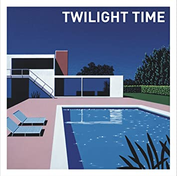
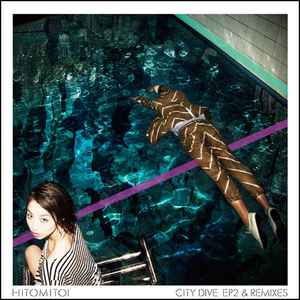
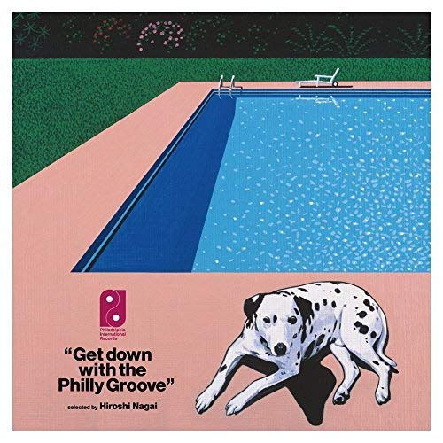
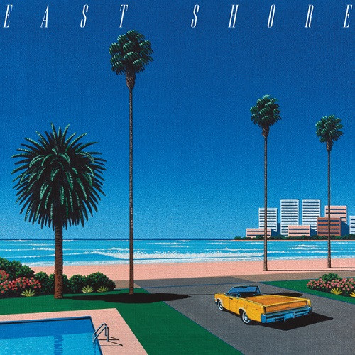

Here is a listing of all works Hiroshi Nagai has contributed to in any fashion.
Sorted by: | Artist name - Album name - Year |
Conducting and Leading
- Spangle call Lilli line - For Installation - 2005
Production
- Various - Get Down With The Philly Groove - 2018
Sorted by: | Year - Artist name - Album name |
Visuals
- 1976 - Air Supply - Strangers In Love
- 1976 - Various - Juke Joint Blues Piano 1929-1940

- 1977 - Otis Redding - Ten Years Gone
- 1977 - Various - Rock'n'Roll Graffiti Volume 1
- 1978 - The Paradise Garage - Hello! Disco Fever!
- 1980 - Yuki Katsuragi - Quarter Moon
- 1980 - 岡本一生* - Moonlight Mystery
- 1981 - Eiichi Ohtaki - A Long Vacation
- 1981 - Niagara Triangle / 大滝詠一* - A面で恋をして/ さらばシベリア鉄道

- 1981 - 大滝詠一* - 恋するカレン
- 1981 - 大滝詠一* - 君は天然色/カナリア諸島にて
- 1981 - 大滝詠一* - さらばシベリア鉄道

- 1982 - Naoya Matsuoka & Wesing - Majorca
- 1982 - 大滝詠一* - 雨のウエンズデイ
- 1982 - Niagara Fall Of Sound Orchestral - Niagara Song Book
- 1982 - Naoya Matsuoka & Wesing = 松岡直也* & ウィシング* - The September Wind = 九月の風 ~通り過ぎた夏~
- 1983 - Max Romeo - Mek-Wi-Rock
- 1983 - Max Romeo - Loving You
- 1983 - Pedro & Capricious - Sun Patio
- 1983 - 石黒ケイ* - Purple Road
- 1984 - Max Romeo - I Love My Music
- 1984 - Brian Eno - Thursday Afternoon
- 1984 - Niagara Fall Of Sound Orchestral - Niagara Song Book 2
- 1984 - Hiroshi Yoshimura - A・I・R (Air In Resort)
- 1985 - Max Romeo - One Way
- 1985 - 大滝詠一* - B-Each Time L-Ong
- 1986 - Various - あぶない刑事 Original Soundtrack
- 1987 - Various - Original Soundtrack From The Motion Picture "Hawaiian Dream"
- 1987 - Takako Ohta - Pop Station
- 1988 - Anders & Poncia - Anders 'N' Poncia Rarities
- 1991 - Curtis Mayfield - Of All Time / Classic Collection
- 1993 - Hiroshi II Hiroshi - Hiroshi II Hiroshi Vol. 1
- 1993 - Various - The Best Of T.K. Records (Rock Your Soul)
- 1994 - Bernard Purdie - Bernard Purdie's Jazz Groove Sessions In Tokyo
- 1995 - Bertie Higgins - The Best Of Bertie Higgins Then And Now
- 1995 - Sugiyama, Kiyotaka* - Rhythm From The Ocean
- 1996 - Eiichi Ohtaki, Fiord 7 - Snow Time (The Niagara Enterprises Presents Romantic Winter Song Classics)
- 1996 - Masahiro Takekawa - くじらのハート
- 1997 - Various - Summer Madness
- 2001 - 小滝詠一 = Eiichi Shotaki* - Reimen De Koioshite = 冷麺で恋をして

- 2002 - Various - Breeze - For Twilight Lovers AOR Best Selection
- 2002 - Various - Breeze - AOR Best Selection SUMMER
- 2003 - Various - Breeze Sweet AOR Best Selection
- 2004 - Bobby Caldwell - The Best
- 2004 - Various - Breeze Crossover Best Selection
- 2004 - Ryuichi Sakamoto - Visual Works in Mid-Late 1980's
- 2004 - Various - Breeze - AOR Best Selection CITY
- 2004 - Various - The Best Of J-AOR - Mellow
- 2005 - Spangle call Lilli line
- 2005 - Various - Breeze - AOR J-Selection Cruising
- 2006 - ゴスペラッツ - ゴスペラッツ = Gosperats
- 2006 - Various - J-Wave Presents Colors Of Hawaii
- 2009 - Various - A Long Vacation From Ladies
- 2012 - Hidaka Toru With Fed Music - REPLICA
- 2013 - ジャンク フジヤマ* - シェダル
- 2013 - ジャンク フジヤマ* - Junk Scape
- 2014 - Various - Twilight Time

- 2014 - 一十三十一* / Grooveman Spot & Kashif (4) - Twilight Time EP

- 2015 - Teen Runnings - Now
- 2015 - Various - New Action! Compilation Vol.2
- 2016 - Natsu Summer - 一緒に夢を見ましょう - Issyo ni Yume wo mimasyou
- 2016 - Pages (2) - Future Street
- 2016 - Bill Withers - Menagerie
- 2016 - Various - Light Mellow One Day
- 2016 - Sunny Day Service - Dance To You
- 2017 - Nigel Olsson - Nigel
- 2017 - Various - Light Mellow - Sealine
- 2017 - AAA - No Way Back
- 2017 - Pictured Resort - Southern Freeway
- 2017 - Various - Get's Bossa Nova 2002

- 2017 - Kashif (4) - BlueSongs
- 2018 - DJ Notoya - Tokyo 1980s Victor Edition (Boogie, Funk & Modern Soul From Japan)
- 2018 - Flamingosis - Flight Fantastic
- 2018 - Various - Get Down With The Philly Groove

- 2018 - Opus Inn - Time Gone By
- 2019 - Night Tempo - 夜韻 Night Tempo
- 2019 - Bronze (Korea)* - East Shore

- 2019 - GROOVE-FM* & West Palm Beats - Palm Breeze
- 2019 - Various - Pacific Breeze: Japanese City Pop, AOR And Boogie 1976-1986
- 2019 - Various - No Music, No Life. Tower Records 40th Anniversary Japanese Mellow 1975-2012 Windy Afternoon
- 2019 - Niagara Fall Of Sound Orchestral - Niagara Concert '83
- 2019 - ファンクGroove-FM - City Drive II
- 2019 - Various - No Music, No Life. Tower Records 40th Anniversary Japanese Groove 1977-2006 Light'n Up

- 2020 - Ryusenkei / Hitomitoi - Talio

- 2020 - //turntboiフォレバー95* - Playa Redux

- 2020 - Various - Pacific Breeze 2: Japanese City Pop, AOR And Boogie 1972-1986

- 2021 - Bronze (15) - Aquarium

- 2021 - Dunns River - Sunshine Disco

- 2021 - Dunns River - Baby Tonight

- 2021 - Dunns River - Pon De Wave

- 2021 - Various - City Pop Voyage - Standard Best

- 2022 - 石黒ケイ* - Yokohama Ragtime

The following albums Hiroshi Nagai has done artwork for, but the publishing date is unkown or varied.
- Curtis Mayfield - Live In New York City

- Marty Roth, Orson Welles, Sidney Sheldon - The Chase Chapters 1 - 9

- Sea-Boys - Eleki On The Beach Ventures Medley 渚のエレキ・パーティー